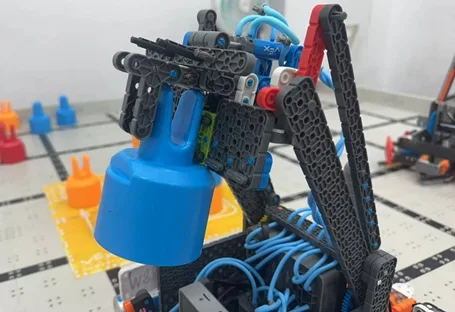

7.3 机械优化二：一体化抓取与勾取系统
1. 一体化4X梁抓取
措施： 换为一体化4X梁，并在爪子上缠绕橡皮筋增加摩擦力。
优势： 摩擦点完全固定，确保在翻转过程中销钉不发生偏移。抓取成功率提升至 95%。

2. 勾爪弧度优化
措施： 调整勾爪角度和弧度，使抓取点对准万能梁中心。优化物理限位位置，防止抓取时因震动导致的滑脱。
优势： 兼顾勾取万能梁与销钉的功能，为后续的抬升与堆叠提供了稳固的基础载体。
本章节详细记录了战队基于一代车（Gen 1）在训练与城市赛中暴露的底盘漂移、抓取偏差及抬升不足等问题，研发并制造二代车（Gen 2）的全过程。
核心改进包括：底盘降速稳压处理（由2倍速优化为1.5倍速）、一体化4X梁抓取结构、抬升结构的物理极限调试、气动定位角引入以及一键自动化连贯动作编程。
本章核心任务： 打造一台通过性更强、操作更灵活、堆叠更稳定的进阶机型。
基于北京城市赛的数据复盘，我们确立了二代车（Gen 2）的四个核心技术改进目标：
方案一：齿轮上移（物理通过性）
痛点： 一代车底盘齿轮位置过低，穿越 Loading Beam 时会发生严重的物理摩擦。我们将齿轮组安装位置整体向上迁移，消除了地面的干涉。
方案二：降速稳压（运动控制）
改进： 将底盘齿轮配比由2倍速降速至1.5倍速。在 V5 程序中对底盘电机输出乘以稳定性系数（约 0.75x），并优化动力分配逻辑。
效果： 机器人移动更平稳，消除了高速状态下冲散场地上密集销钉的风险，大幅提升了抓取前的定位精度。
措施： 换为一体化4X梁，并在爪子上缠绕橡皮筋增加摩擦力。
优势： 摩擦点完全固定，确保在翻转过程中销钉不发生偏移。抓取成功率提升至 95%。
措施： 调整勾爪角度和弧度，使抓取点对准万能梁中心。优化物理限位位置，防止抓取时因震动导致的滑脱。
优势： 兼顾勾取万能梁与销钉的功能，为后续的抬升与堆叠提供了稳固的基础载体。
在 1.0 版本中，机器人勉强能堆叠至中心区高塔的第二层。由于力臂较短，当需要触及更高点位时，电机负载剧增且结构晃动严重，导致第三层销钉极易倒塌。
1. 加长抬升力臂： 将原有抬升臂增长了 2.5 英寸。根据杠杆原理，虽然这增加了电机的扭矩负担，但通过增加 1:5 的减速齿轮组成功抵消了负荷，获得了更大的顶端行程高度。
2. 兼顾抓取功能： 在加长力臂的同时，保留了对销钉底座的物理限位，保证抓取销钉的精准度。
高塔堆叠高度满足要求，抬升稳定性提高。
改进背景：解决入场干涉
传统固定角在三角区边缘易卡顿，微调极耗时。改进旨在消除物理隔阂，提升投放流畅度。
Score_In_Triangle() 函数，按下按键即可自动完成“抬升-收角-后退”全套动作。1. 动作丝滑： 操作由繁琐对齐变为一键自动化，无卡顿。
2. 效率倍增： 投放时间由 6s 降至 2.5s，场均多送入 2 个塔。
为配合上述机械优化（特别是抬升与定位角的联动），我们将手动分步操作精简为高度集成的自动化代码。


| 次数 | 遇到的问题 | 改进措施 | 结果/效果 |
|---|---|---|---|
| 1 | 底盘移动漂移，抓取不稳定 | 降低底盘速度系数，固定摩擦点 | 移动稳定性提高，抓取率提升 |
| 2 | 高塔堆叠高度受限 | 加长抬升力臂，重设支点角度 | 成功触达最高塔点位，结构更稳 |
| 3 | 三角区入场被挡板卡住 | 增加气动控制定位角收起功能 | 入场顺滑，完全消除物理干涉 |
| 5 | 翻转与抬升动作手动衔接慢 | 编写程序实现一键连贯执行动作 | 操作流程极大简化，得分效率提高 |
| 10 | 实战模拟中整车动作协调度不足 | 模拟正式比赛节奏，调整电机联动 | 动作精准到位，达到实战竞赛要求 |
| 类别 | 核心名称 | 数量 | 类别 | 核心名称 | 数量 |
|---|---|---|---|---|---|
| 电子/传感器 | V5 主控器 / 遥控器 | 1 / 1 | 动力/气动 | V5 智能电机 (600/200rpm) | 6 |
| 距离传感器 (Distance) | 2 | 气罐 / 气泵 | 2 / 1 | ||
| 触碰 LED (Touch LED) | 1 | 长 / 短气缸 | 2 / 1 | ||
| 磁性传感器 / 电磁阀 | 3 | 电磁阀组合 | 3 | ||
| 结构传动 | 24齿/36齿/60齿/12齿 | 6/6/2/4 | 结构件 | 一体化 4X 梁 | 2 |
| 300 / 450 / 600 规格梁 | 2/2/0 | 2x16 / 2x20 横梁 | 6/5 | ||
| 万向轮 (Omni Wheels) | 4 | 销钉/垫片/橡皮筋 | 若干 |
| 策略模式 | 一代车表现 (1.0) | 二代车实测 (2.0) | 关键提升点 |
|---|---|---|---|
| 91分策略 | 105 分 (无三角区) | 166 分 | 定位角展开快，增加双色三角区得分 |
| 110分策略 | 144 分 (稳定性差) | 178 分 | 加长力臂，高塔堆叠成功率 100% |
| 技能赛 | 144 分 (无高塔) | 184 分 | 自动化翻转，完成三色中心区任务 |
通过本章节的迭代与实测可以得出，二代车不仅是一次成功的机械迭代，更是软硬件深度融合的成果。
核心成果回顾：
下一步规划： 战队将以此成熟机型备战即将到来的教委市赛，并在后续章节中进一步探索针对极端赛况的微调策略。